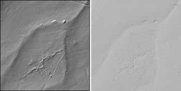
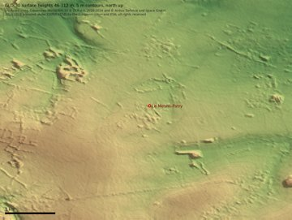
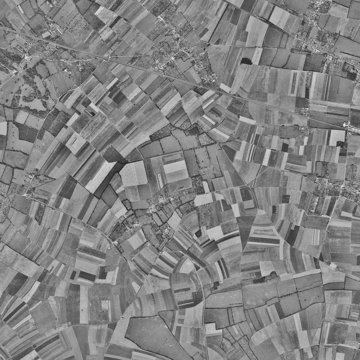
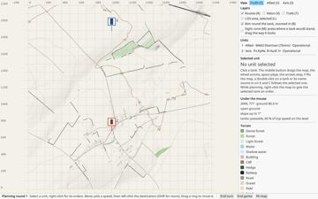
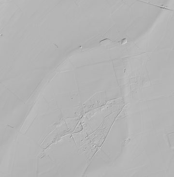
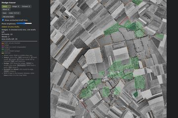
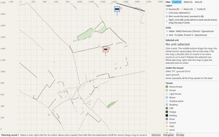
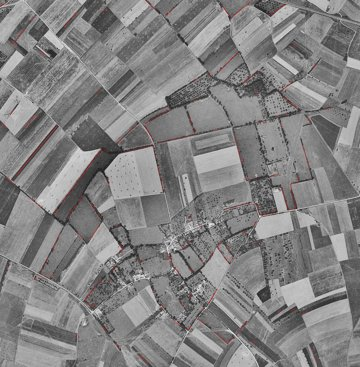
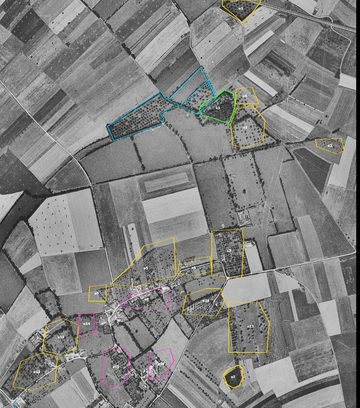
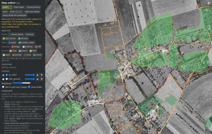

tankzim2000 Terrain and movement
Built 33
Version 0.22.2 6
Which data real maps useBuilt0.22.2
Real maps take their heights from a national laser ground model where there is one, Copernicus DEM GLO-30 (global, about 30 m) elsewhere. For France that is IGN's LiDAR HD ground model (MNT): today's bare ground without trees and buildings, which settles how they are taken out of GLO-30's surface. tools/map/fetch.py fetches it over the Géoplateforme WMS as 32-bit heights at 2 m and averages them into the engine's 10 m cells (elevation.asc). Le Mesnil-Patry: 218 by 221 cells, 63-94 m. GLO-30's licence was read 2026-11-13 and stays the fallback.
Question: Which height data does a real map use?
Options
✓Copernicus GLO-30 first
National laser data later.
Why: Chosen on 2026-11-11, the recommendation. Since 2026-11-14 the fallback where there is no national laser data.
✓IGN LiDAR HD ground model in France
Today's bare ground at 1 m, without trees and buildings, Licence Ouverte 2.0.
Why: Chosen 2026-11-14: it settles the open question of taking today's trees and buildings out of the heights.
Facts
| stated | The heights of an old landscape are not those of today; the source says the heights come from modern data and the surfaces from historical maps, partly MOCK. | SESSION.md, F6c (2026-10-31) |
| stated | Article 4: "The Licensor grants to the User the following non-exclusive rights of use regarding the Copernicus WorldDEM-30: (a) reproduction; (b) distribution; (c) communication to the General Public; (d) adaptation, modification and combination with other data and information." | License-COPDEM-30.pdf, Article 4 |
| stated | Article 6(b): "produced using Copernicus WorldDEM-30 © DLR e.V. 2010-2014 and © Airbus Defence and Space GmbH 2014-2018 provided under COPERNICUS by the European Union and ESA; all rights reserved". | License-COPDEM-30.pdf, Article 6(b) |
| stated | Article 6(c): "The organisations in charge of the Copernicus programme by law or by delegation do not incur any liability for any use of the Copernicus WorldDEM-30". | License-COPDEM-30.pdf, Article 6(c) |
| stated | Article 2: the Copernicus WorldDEM-30 is "a Digital Surface Model providing a horizontal sampling of 30m". | License-COPDEM-30.pdf, Article 2 |
| observed | The tile N49 W001 over Le Mesnil-Patry gives surface heights of 46 to 112 m in a 5.8 by 6.7 km window, rising from north to south. | Copernicus_DSM_COG_10_N49_00_W001_00_DEM.tif, read 2026-11-13 |
| observed | The LiDAR HD ground model comes from the Géoplateforme WMS (layer IGNF_LIDAR-HD_MNT_ELEVATION.ELEVATIONGRIDCOVERAGE.WGS84G) as a 32-bit GeoTIFF that Pillow reads; shaded, the 10 m height layer of Le Mesnil-Patry shows the same banks, the bridge's spoil heaps and the village as IGN's own shading. | tools/map/fetch.py and the picture under this item, 2026-11-14 |
Code
tools/map/fetch.py: fetch_heightstools/map/fetch.py: cells_from
Open
- Countries without laser data: the GLO-30 path (smoothing out today's trees and buildings) is not built yet.
Pictures

The first real map is Le Mesnil-Patry, 11 June 1944Built0.22.2
Decided 2026-11-13: the first real map, and the place of the historical engagement, is Le Mesnil-Patry in Normandy, where B Squadron of the 1st Hussars with the Queen's Own Rifles on its tanks crossed open wheat fields toward the village on 11 June 1944 and was caught by Pz IV of the 12th SS Panzer Division. Chosen because the source of our ballistics covers both sides' guns: the Pz IV H is ours, the Sherman V (M4A4) carries the same 75 mm M3 as our M4A3, and the Firefly's 17-pdr is in it too. Only the map is new. Built 2026-11-14 (F12): the map is in maps/le_mesnil_patry, version 0.2.0, made by the workflow: the data fetched by tools/map/fetch.py, the proposals of tools/map/proposals.py checked in the map editor, the LiDAR HD height layer, and the engine's terrain.geojson. maps/le_mesnil_patry/view.json shows it in the window; the scenario of the engagement is still to be decided.
Question: Which place is the first real map, and the historical engagement?
Options
✓Le Mesnil-Patry, 11 June 1944
Canadian Shermans against Pz IV H in open fields and hedges, a squadron against a company.
Why: Chosen 2026-11-13: the ballistics source covers both sides; only the map is new.
Noville, 19 December 1944
Team Desobry against the 2nd Panzer Division in fog.
Why: Not chosen: Panthers took part, which we do not have.
Arracourt, September 1944
The 37th Tank Battalion against two panzer brigades in fog.
Why: Not chosen: mostly Panthers, and larger than our scale.
The early Afrika Korps
A new front with its own vehicles.
Why: Later: few of its guns are in the ballistics source (see the idea).
Facts
| secondhand | The 1st Hussars' B Squadron was ambushed in open fields near Le Mesnil-Patry on 11 June 1944; the sources disagree on the losses (34 or 51 tanks). | Wikipedia, Battle of Le Mesnil-Patry; TracesOfWar, Battle for Le Mesnil Patry 11 June 1944 |
| secondhand | One account names Jagdpanzer IV of SS-Panzerjägerabteilung 12 among the German side; to be settled from a primary source. | TracesOfWar, Battle for Le Mesnil Patry 11 June 1944 |
| secondhand | Copernicus DEM GLO-30 is free to use, with the notice "Produced using Copernicus WorldDEM-30 © DLR e.V." for modified data; read from second hand, the licence PDF itself is still to be read. | Copernicus Data Space, License-COPDEM-30.pdf (via search) |
| secondhand | A translated German war diary extract lists claims of 10 Shermans and 4 "General Lees" at le Mesnil-Patry by the 8. Kompanie and 7 Shermans by the 9. Kompanie of SS-Panzer-Regiment 12 (II. Abteilung, Prinz); unit claims from one source. | Szamveber, Waffen-SS Armour in Normandy (erenow.org extract) |
| secondhand | The attack aimed at the higher ground of Hill 107 south of Cheux, beginning with Le Mesnil-Patry; B Squadron attacked first, C Squadron after. | TracesOfWar, Battle for Le Mesnil Patry 11 June 1944; Wikipedia, Battle of Le Mesnil-Patry |
| secondhand | British 1:25,000 sheets of Normandy (GSGS 4347, with defence overprints from May 1944) are held by McMaster University Library; a Caen sheet 40/16 SW is listed. The sheet covering Cheux and Le Mesnil-Patry is not yet found. | library.mcmaster.ca, Caen France 1:25,000 map sheet 40/16 SW, defence overprint May 1944 |
| secondhand | RAF reconnaissance photographs of Normandy from June 1944 are in the National Collection of Aerial Photography (NCAP, Historic Environment Scotland), searchable by place in its Air Photo Finder; IGN's BD ORTHO Historique starts in 1945. | ncap.org, D-Day landings; IGN DC_BDORTHOHisto_1-0.pdf |
| secondhand | A detailed multi-part account of the action with the ground and the German companies: Steel Chariots, Le Mesnil-Patry parts 1-5. | losthistory.net/steelchariots/le-m-p1.htm |
| observed | Scholars GeoPortal (McMaster) holds five open-access GSGS 4347 1:25,000 sheets of Normandy with defence overprints: Caen 40/16 SW (May 1944) and St. Pierre 40/14 SE, Potigny 40/14 SW, Falaise 40/12 NW and Mezidon 40/14 NE (Operation Totalize, 6 August 1944). None covers the ground west of Caen; sheet 37/16 is not among them. The Caen sheet (a GeoTIFF in Web Mercator, about 1.67 m a pixel) covers 0.44 to 0.19 degrees west, 49.09 to 49.22 north, about 7 km east of Le Mesnil-Patry. | geo.scholarsportal.info, search by area, 2026-11-13; WWIIMMCaen_1944_TIFF.tfw |
| observed | The Caen sheet's note: contours at 10 m vertical interval, interpolated from spot heights and hachures on the French 1:80,000 and amplified from air photo examination; compiled from air photographs on a control provided by existing French triangulation. Its legend shows hedges, woods and orchards, roads by class, and ground probably soft. | GSGS 4347, Caen 40/16 SW, Defence Overprint May 1944 |
| observed | IGN's historical air photographs, layer ORTHOIMAGERY.ORTHOPHOTOS.1950-1965 ("Photographies aériennes historiques 1950-1965", greyscale, orthorectified, PNG tiles to zoom 18) on data.geopf.fr, fetched over Le Mesnil-Patry at zoom 16 (about 2.4 m a pixel): the village with its orchards, the hedges between fields, strip fields and the Caen-Bayeux railway, before the land consolidation of the 1960s. Over Le Mesnil-Patry the photographs are from 1947: mission 1947_F 1411-1612_P_25000, flown 9 to 28 August 1947, three years after the battle and in summer. | data.geopf.fr WMTS GetCapabilities and GetTile, 2026-11-13 |
| stated | BD ORTHO Historique is published under "Licence Ouverte / Open Licence version 2.0" with temporal coverage "du 1 janvier 1945 au 1 janvier 1995"; the page does not name the WMTS layer. The WMTS service states: "Conditions Générales d'Utilisation disponibles ici : https://cartes.gouv.fr/cgu". | data.gouv.fr, BD ORTHO Historique, informations; data.geopf.fr WMTS GetCapabilities |
| observed | The mosaic graph of the 1950-1965 layer gives, over Le Mesnil-Patry: nom '1947_F 1411-1612_P_25000', begin_date '1947-08-09Z', end_date '1947-08-28Z'. | data.geopf.fr WFS, ORTHOIMAGERY.ORTHOPHOTOS.1950-1965.GRAPHE-MOSAIQUAGE:graphe, 2026-11-13 |
| stated | The Géoplateforme terms: "Les données contenues dans les API sont soumises à la licence choisie et renseignée par le Fournisseur de données"; failing that "la Licence Ouverte / Open Licence – Etalab s'applique". The Licence Ouverte 2.0 asks to "mentionner la paternité de l'«Information» : sa source (a minima le nom du « Concédant ») et la date de la dernière mise à jour de l'« Information » réutilisée", which a URL to the source can fulfil, and the mention must not suggest any endorsement. The WMTS tile service is listed as "Non soumis à limite d'usage". | cartes.gouv.fr/cgu (version of 15 October 2024); data.gouv.fr, Licence Ouverte 2.0 |
Code
tools/map/fetch.py: maintools/map/proposals.py: buildtools/map/trace.py: main
Open
- The Canadian tanks were Sherman V (M4A4) and Fireflies: a vehicle file of their own, or the M4A3 standing in as a known deviation.
- The map sheet: 37/16 (west of Caen) is not at McMaster. Next: IGN's 1945-47 air photographs (Remonter le temps), the French 1:80,000 carte d'état-major the British sheets were drawn from, or another archive holding GSGS 4347 37/16. The Caen sheet serves as the model of the style for G1; its terms of use are still to be read (the portal marks it open access).
- The ground in June 1944: an RAF photograph from NCAP, or IGN's 1945-47 photographs, for the hedges, orchards and wheat fields.
- The forces: the 1st Hussars war diary (Library and Archives Canada) and Stacey's official history for the Canadians; Meyer and Szamveber for the 12th SS. German claims (17 Shermans and 4 Lees) against Canadian losses (34 to 51 tanks).
- The scenario of the engagement on 11 June 1944 (forces, starting positions) is not decided.
Map version 0.2.0
0.2.0 | 2026-11-14 | The height layer: IGN's LiDAR HD ground model averaged into 10 m cells (elevation.asc, 63-94 m), today's bare ground without trees and buildings (tools/map/fetch.py). |
0.1.0 | 2026-11-14 | The first whole map, from the editor's proposals (tools/map/proposals.py): today's roads, hedges, woods, the railway and the buildings with a roof on the 1947 air photograph from IGN's BD TOPO, judged against that photograph; the first hedges and orchards traced by hand. No heights yet. |
Pictures



Which hedges stand on a bank: by a rule, not hedge by hedgeBuilt0.22.2
Decided 2026-11-14: an earth bank can hardly be seen on the 1947 air photograph, so the banks are set by a rule (MOCK): hedges round the village, the farms and the orchards stand on a bank, hedges out in the open fields do not. The photograph shows open fields north and west of the village and the enclosed bocage round it. IGN's LiDAR HD terrain model covers the map and shows field edges and the enclosures round the village as small steps; it is today's ground, so it can confirm a bank where the hedge still stands but not one removed after the war.
Question: How do we know which hedges stand on an earth bank?
Options
✓A rule now, checked later
Banks round the village, farms and orchards, none in the open fields (MOCK); checked against LiDAR HD and the war diaries.
Why: Chosen 2026-11-14, the recommendation: the photograph does not show the banks.
Hedge by hedge from the photograph
Judge each hedge on the 1947 photograph.
Why: Not chosen: a bank under a hedge hardly shows from above.
Facts
| MOCK | Hedges round the village, the farms and the orchards stand on a bank; hedges in the open fields do not. | the decision of 2026-11-14 |
| observed | IGN's MNT LiDAR HD covers the whole 2.2 by 2.2 km window round the village; it is published in 1 by 1 km tiles at 0.5 m under the Licence Ouverte 2.0 (lov2). | data.geopf.fr WMS, layer IGNF_LIDAR-HD_MNT_ELEVATION.ELEVATIONGRIDCOVERAGE.SHADOW, and https://www.data.gouv.fr/api/1/datasets/mnt-lidar-hd/, 2026-11-14 |
| observed | On the shaded LiDAR ground the field edges and the enclosures round the village show as small steps and banks; north and west of the village the ground is almost even. | the shaded picture under this item, 2026-11-14 |
| MOCK | In the proposals a hedge within 50 m of a building or 15 m of an orchard stands on a bank. | tools/map/proposals.py, 2026-11-14 |
Code
tools/map/proposals.py: build
Open
- The bank heights measured from the LiDAR HD tiles (0.5 m) where the 1947 hedges still stand.
- The war diaries (1st Hussars, Queen's Own Rifles) on hedges and banks on 11 June 1944.
Pictures

The tracing tool grows into a map editorBuilt0.22.2
Decided 2026-11-14 (a draft plan), the editor before the tracing: the tracing tool becomes the map editor, still a local web page with Python's standard library, no simulation code. All the engine's terrain kinds in a palette, each with its properties (height, bank, width); hedges and roads drawn as centre lines with a width and turned into narrow polygons only on export, the rest as areas; backgrounds to choose (the 1947 air photograph, the shaded LiDAR ground, contours from the map's own .asc, or none for a made-up map); drafts as a layer of their own, dashed until checked; saving writes the engine's .geojson and lets the engine read it, so errors show at once. It opens the engine's existing maps too; hedges in them come in as polygons, not lines. Backgrounds are layers: future maps rest on different material, an air photograph here, only hand-drawn sketches for some battles; no automatic matching, but layers stacked with their own opacity, and a layer placed by hand (moved, turned, scaled, or fitted to a few known points) on top of layers already placed, so the person traces what cannot be automated.
Question: How is the map editor made?
Options
✓Grow the tracing tool in the browser
A local web page as today; the editor is built first and the map traced in it in one pass; its file extends today's, so nothing traced is lost.
Why: Chosen 2026-11-14: quick to change and already in use; built before the tracing so nothing is done twice.
In the game's window (egui)
Editing inside the program itself.
Why: Not chosen now: much more work, and it is simulation code.
Facts
| MOCK | A road is drawn 6 m wide. | the decision of 2026-11-14 |
| MOCK | A building is 6 m high until it can be measured from LiDAR where it still stands. | the decision of 2026-11-14 |
| observed | A map in the engine is two files: the areas in a .geojson (parse_terrain_geojson) and the ground in a .asc height grid. | src/files.rs, src/terrain.rs |
| DESIGN_CHOICE | A background layer is placed either axis-aligned (its corners in local metres) or by an affine transform from image pixels to local metres; the LiDAR layer and the 1947 photograph are both axis-aligned in the same local metres. | maps/le_mesnil_patry/air_1947.json, lidar_ground.json, 2026-11-14 |
| observed | Version 1 made 2026-11-14 in tools/map (trace.py, trace.html, map_export.py, lines_to_terrain.py without shapely, 10 export tests): all kinds in a palette with a properties panel, vertex editing, background layers with opacity, placing a layer by hand or by control points, and the export to the engine's GeoJSON on save; work kept in the old tool's browser storage is carried over. | python3 -I tools/map/test_map_export.py and a headless browser check, 2026-11-14 |
| observed | The browser's copy remembers which source.geojson it is based on; when the file on disk has changed since, the editor asks before using the copy, and OK loads the file and keeps the copy aside as a backup. Added 2026-11-14 after an old browser copy was saved over newer files. | tools/map/trace.py source_stamp and trace.html loadFeatures, tried in a headless browser 2026-11-14 |
Code
tools/map/trace.py: maintools/map/trace.py: backgroundstools/map/trace.html: swapProposalstools/map/map_export.py: exporttools/map/trace.py: source_stamp
Open
- Opening the engine's existing maps (step 3 of the plan).
- Letting the engine read the exported map on save (there is no command that reads a map without a scenario).
- Contours from the map's .asc as a background, once Le Mesnil-Patry has its heights.
- Lone trees: left out for now (orchard trees are in the areas, hedge trees in the hedge's height).
- A draft of the roads found automatically, as for the hedges.
- Contours from the map's own .asc as a background are not built yet.
Pictures

Railways as a terrain kindBuilt0.22.2
Built 2026-11-14, version 0.22.2: a railway is a narrow polygon on the map, drawn in the map editor as a centre line 8 m wide (a double track's bed). A tank crosses it at half road pace (rails and ballast); the ground is firm like gravel. Its height is the embankment above the ground and blocks sight up to it like a hedge (0, a level track, the default). With a bank (a high embankment or a cutting) it cannot be crossed, except where a road covers it (a level crossing, an underpass). Drawn dark in the window. The railway along the north edge of Le Mesnil-Patry comes in as a proposal: it shows on the 1947 photograph.
Question: Should the map have railways?
Options
✓A railway kind like the hedge
A narrow polygon; half road pace; its height blocks sight; a bank makes it impassable.
Why: Chosen 2026-11-14: the same mechanics as the hedge, nothing new to learn.
Facts
| MOCK | A tank crosses a railway at half road pace, the ground is firm like gravel, and the bed is 8 m wide. | src/terrain.rs and tools/map/proposals.py, 2026-11-14; referenced against the 1947 air photograph, LiDAR HD and BD TOPO of Le Mesnil-Patry, not a source on speed |
| observed | The railway at Le Mesnil-Patry runs along the north edge of the map; the LiDAR ground shows a low bed and an underpass where a road goes under it, so it comes in level, without a bank. | maps/le_mesnil_patry/lidar_ground.jpg and bdtopo/troncon_de_voie_ferree.geojson, 2026-11-14 |
Code
src/terrain.rs: feature_speed_factorsrc/terrain.rs: terrain_speed_factorsrc/terrain.rs: a_banked_railway_is_impassable_and_a_plain_one_is_half_pacetools/map/map_export.py: export
Open
- Cross ticks in the window: the terrain style is one fill per kind, so the railway is a plain dark fill for now.
- The embankment's height where the LiDAR shows one, measured from the 0.5 m tiles.
Pictures

Maps carry a version and a changelog, like the codeBuilt0.22.2
Built 2026-11-14: each map folder has a map.json with the map's version and a changelog. Saving in the map editor with a line of what changed raises the last digit and adds the line; an empty line saves the work without a new version; the middle digit (new content) is raised by hand. The engine's terrain file carries the version, a new game records it with the map's fingerprint, and a replay of a game whose map has changed names both versions. The changelog is shown under the map's item on the site.
Question: Are the maps versioned like the code?
Options
✓A version and a changelog per map
map.json per map folder; the editor raises the version on save with a line; the game record notes it; the site shows the changelog.
Why: Chosen 2026-11-14: a map changes over time like the code, and a game must say which map it was played on.
Facts
| observed | A game record already refused a replay when the map's text had changed (its SHA-256 among the inputs); the version only makes the message say which map version the game was played on and which is there now. | src/game.rs check_inputs, 2026-11-14 |
| observed | A game made on Le Mesnil-Patry 0.1.0 and replayed after the map was changed to 0.1.1 is refused with: changed: terrain.geojson (map version 0.1.0 in the game, 0.1.1 now). | tankzim2000 new and game on a copy of the map, 2026-11-14 |
Code
tools/map/trace.py: bumptools/map/trace.py: map_metasrc/terrain.rs: map_versionsrc/game.rs: check_inputstools/site/build.py: map_changelog
Open
- The replay's message still begins "the game is from 0.22.2 and does not work with 0.22.2" when only a map changed.
Version 0.22.1 4
Hedges are narrow polygons that block sight, with or without a bankBuilt0.22.1
Built 2026-11-13: a hedge is a terrain kind of its own, drawn as a narrow polygon (the rule of 2026-10-31: small terrain below the raster's resolution is drawn as polygons). It blocks sight up to its height, as a cliff does. Whether a tank gets through is a property of each hedge, not a new rule: on an earth bank (the Normandy hedgerow) it is impassable, without one it is passed at 0.3 of road pace (MOCK). A hedge without a height blocks nothing.
Question: What does a hedge do in the engine?
Options
✓A kind of its own with a bank property
Blocks sight up to its height; impassable on a bank, slow without.
Why: Chosen 2026-11-13, the recommendation.
Facts
| stated | Small terrain below the raster's resolution (bocage, sunken lanes) is drawn as polygons of its own. | docs/archive/SESSION_2026-11-08.md, F6c (2026-10-31) |
Code
src/terrain.rs: feature_speed_factorsrc/terrain.rs: is_blocking_kindsrc/models.rs: TerrainKind
Open
- The height of the hedges near Le Mesnil-Patry: a source question (war diaries, Steel Chariots); 3 m is MOCK. Which hedges stand on a bank: see terrain-hedge-bank-rule.
Orchards are drawn as light forest for nowBuilt0.22.1
Decided 2026-11-13: the orchards round the village are drawn as light_forest (MOCK, 6 m high) until an orchard kind of its own is needed (open sight under the crowns).
Question: How are the orchards drawn?
Options
✓light_forest now
An orchard kind later if it matters.
Why: Chosen 2026-11-13, the recommendation.
Code
tools/map/map_export.py: export
A tracing tool for real mapsBuilt0.22.1
Decided and made 2026-11-13: a small local web page (tools/map/trace.py and trace.html) shows the 1947 air photograph with a draft of the hedges found automatically (tools/map/hedges_draft.py, about half of them, with false lines in striped fields); the hedges and orchards are checked, drawn and saved by hand, and tools/map/lines_to_terrain.py turns the checked lines into the map's polygons. The automatic search alone was not good enough on a greyscale photograph of 1947. Added 2026-11-14: a wood mode (closed canopy, turned into forest, 15 m, MOCK) beside hedge and orchard, and area drafts: the photograph was read in 16 tiles and close-ups and drew 19 woods and orchards as dashed drafts (maps/le_mesnil_patry/areas_draft.geojson, each marked sure, likely or a guess), added in the tool with one button. The edges are rough; they show where to look and the areas are drawn again by hand.
Question: How are the hedges drawn from the air photograph?
Options
✓An automatic draft, checked and drawn by hand in a tool
A draft is found automatically, then checked and corrected by hand on the photograph.
Why: Chosen 2026-11-13, the recommendation; the automatic search found about half.
Only the automatic search
Tune the search further.
Why: Not chosen: it likely stops near 70 %.
Facts
| observed | The draft found 162 pieces, 8.7 km of hedge, in a 2.2 by 2.2 km window round the village. | tools/map/hedges_draft.py, 2026-11-13 |
| observed | The 19 area drafts: 2 woods (1 sure, 1 likely) and 17 orchards (11 likely, 6 guesses); about 20,000 tokens of pictures for 16 tiles, 9 close-ups and 2 checks. | maps/le_mesnil_patry/areas_draft.geojson, 2026-11-14 |
| MOCK | A wood is turned into forest 15 m high, the same as the copses on the made-up maps. | tools/map/lines_to_terrain.py, 2026-11-14 |
Code
tools/map/trace.py: image_sizetools/map/map_export.py: line_to_polygon
Open
- The hedges, orchards and woods are traced by hand (started 2026-11-14).
- Grown into the map editor (terrain-map-editor).
Pictures


Proposals for the whole map: likely ones accepted, the rest as draftsBuilt0.22.1
Built 2026-11-14: everything that can be proposed for the map is made into proposals by tools/map/proposals.py from IGN's BD TOPO, judged against the August 1947 air photograph, and brought into the map editor by "Swap drafts for proposals", which removes every unchecked draft and leaves out what checked work already holds. A likely proposal comes in accepted, with a dotted edge and on a list of its own to check (Shift+Tab); a guess comes in as a dashed draft (Tab). Each carries its source, confidence and a note saying why. Buildings: a build year up to 1944 likely; 1945-1960 or without a year likely where a roof shows on the photograph, else left out; after 1960 left out. Roads and the railway: likely where they show on the photograph (the departmental roads always). Hedges: likely where today's hedge shows as a dark line or the 1947 automatic draft found it; the 1947 drafts no hedge of today matches stay drafts. Woods: likely where dark on the photograph. Ponds are guesses. Banks by the rule. For Le Mesnil-Patry: 433 proposals, 173 likely (63 hedges, 50 roads, 48 buildings, 9 woods, 3 railway pieces) and 260 guesses (185 hedges, 40 roads, 33 woods and orchards); 243 buildings and 7 trees under 100 m² left out.
Question: Which proposals are accepted at once and which are drafts?
Options
✓Likely ones accepted, the rest drafts
A high-confidence proposal goes straight into the map; a lower one waits as a dashed draft.
Why: Chosen 2026-11-14; built the same day.
Facts
| observed | BD TOPO is under the Licence Ouverte 2.0 (lov2). | https://www.data.gouv.fr/api/1/datasets/bd-topo-r/, 2026-11-14 |
| observed | Of the 291 buildings, 6 carry a build year before 1900 and 18 one from 1950-1956 (the rebuilding); 183 have none. | maps/le_mesnil_patry/bdtopo/batiment.geojson (date_d_apparition), 2026-11-14 |
| observed | The BD TOPO hedges carry no height or width here; the road pieces carry a nature (chemin, route empierrée, route à 1 chaussée) and often a carriageway width of 3-5 m. | maps/le_mesnil_patry/bdtopo, 2026-11-14 |
| observed | Today's hedges and roads were scored by how much they differ in grey from the ground 9-13 m to each side on the 1947 photograph; the same lines moved 35 m to the side are the control. 5 % of the moved hedge lines are 20 grey levels darker or more (the threshold), against 63 of the 136 real ones (46 %); 6 % of the moved road lines differ by 20 either way, against about half of the real roads. | tools/map/proposals.py on maps/le_mesnil_patry, 2026-11-14 |
| MOCK | The thresholds (20 grey levels for hedges and roads, a third of a wood darker than the photograph's 10th percentile), the bank distances (50 m to a building, 15 m to an orchard), the road widths where BD TOPO gives none and leaving out woods under 100 m² are starting guesses. | tools/map/proposals.py, 2026-11-14 |
| observed | BD TOPO's woods here are mostly small: 32 areas, most under 5 000 m², and few of them dark on the 1947 photograph; the copse north-east of the village that was there in 1947 is not in BD TOPO and stays one of the 1947 area drafts. | maps/le_mesnil_patry/bdtopo/zone_de_vegetation.geojson and the 1947 photograph, 2026-11-14 |
| observed | A map saved from the editor with the accepted proposals is read by the engine: a duel on it ran without errors. | cargo run with a scenario on the exported terrain.geojson, 2026-11-14 |
| observed | A roof on the 1947 photograph is a footprint with at least 5 % of it brighter than the photograph's 90th percentile and a mean grey gradient of at least 22 over it and 3 m round it. All 6 buildings built before 1945 pass, 5 % of the 83 built after 1960 (which cannot have stood in 1947) do, and 29 of the 176 without a year; on contact sheets the passing ones stand on buildings of 1947 and the others mostly on orchards and fields, such as the housing south of the village. | tools/map/proposals.py on maps/le_mesnil_patry, 2026-11-14 |
| MOCK | The roof thresholds are starting guesses, chosen on Le Mesnil-Patry; a ruin without a roof in 1947 does not pass, and a building gone since is not in BD TOPO at all. | tools/map/proposals.py, 2026-11-14 |
| observed | The railway runs along the north edge of the map, clear on the 1947 photograph; the LiDAR ground shows a low bed and an underpass where a road goes under it (BD TOPO: a piece above the ground). | maps/le_mesnil_patry/air_1947.jpg, lidar_ground.jpg and bdtopo/troncon_de_voie_ferree.geojson, 2026-11-14 |
Code
tools/map/proposals.py: buildtools/map/proposals.py: building_ruletools/map/trace.html: swapProposalstools/map/test_proposals.py: Rules
Open
- The thresholds are calibrated against moved lines and later buildings, not against a known answer; the hand-checked hedges will show how often a likely one is wrong.
- Buildings that stood in 1944 and are gone today, and ruins without a roof in 1947, are not proposed; they are traced by hand if wanted.
Pictures
![Today's roads (yellow), buildings (blue), hedges (red) and woods and orchards (green) from IGN's BD TOPO drawn on the August 1947 air photograph of Le Mesnil-Patry, about 2.2 by 2.2 km, north up: the raw material for the map's proposals; what stood in 1944 is judged against the photograph. Sources: IGN, BD TOPO® V3 (Licence Ouverte 2.0), https://www.data.gouv.fr/datasets/bd-topo-r, fetched 2026-11-14; IGN, BD ORTHO® Historique (photographs of August 1947), https://www.data.gouv.fr/datasets/bd-ortho-r-historique, fetched 2026-11-13.](tacai_img/le-mesnil-patry-bdtopo-on-1947__0.22.1.jpg)

Version 0.20.0 1
Speeds are written in km/h in data.rsBuilt0.20.0
All speeds in the vehicle files are written in km/h (the sources often use mph), and the loader converts them by dividing by 3.6, so they can be compared. The original unit stays in the value's note as provenance. Before F7 the same held for data.rs.
Question: In which unit are the speeds written in data.rs?
Options
✓km/h
All speeds written in km/h, converted by 3.6.
Why: So that they are comparable.
Facts
| stated | Sherman M4 road speed 24 mph (38,6 km/h), the lower bound of the book's range 24 to 29 mph; the variant page gives no figure of its own. | SESSION.md, Beslut och skälen, Startvärden beslutade 2026-10-25, alla DESIGN_CHOICE/MOCK utom maxfarten |
Code
vehicles/panzer_iv_h.toml: max_speed_kmhvehicles/sherman_m4a3_75mm.toml: max_speed_kmh
Version 0.12.0 2
Speed builds up and brakes; a gear change costs the tickBuilt0.12.0
A vehicle speeds up and brakes instead of jumping. Up: the lesser of the engine's power through the transmission over the speed and the tracks' grip, less rolling resistance. Down: the brakes, up to the grip. A gear change costs what is left of the tick. Ten steps per tick. A vehicle that has to stop somewhere brakes so that it can still stop there.
Question: How does a vehicle speed up and slow down?
Facts
| MOCK | Transmission efficiency 0.75 of the engine's power reaches the tracks. | src/rules.rs TRANSMISSION_EFFICIENCY |
| MOCK | Rolling resistance 0.03 of the weight on firm ground and 0.15 in a bog; grip 0.7 and 0.3 of the weight. Within the range of the rolling-resistance source cited in the code. | src/rules.rs ROLLING_RESISTANCE_FIRM, ROLLING_RESISTANCE_BOG, GRIP_FIRM, GRIP_BOG |
| MOCK | Brakes 3.0 m/s² for both vehicles, about 0.3 g, not sourced. | src/data.rs brake_mps2 |
Code
src/rules.rs: next_speedsrc/rules.rs: braking_mps2
Open
- Reverse gear and final drive of the Pz IV are not found; the figures are not sourced for the Sherman's grip.
Vehicle data for power, mass and gearsBuilt0.12.0
Each vehicle carries its engine power, its mass, its forward gears and its brakes. Power, mass and gears come from the books; the brakes and grip are MOCK.
Question: Which engine, mass and gears does each vehicle have?
Facts
| stated | Pz IV: 300 PS (converted to kW), 25 tonnes, 6 forward gears and 1 reverse. | Chamberlain & Doyle, p. 256 (engine table) and Ausf H data block; src/data.rs engine_kw, mass_t, forward_gears |
| stated | Sherman M4A3: a 500 hp Ford engine, battle weight 68,500 lb, five forward speeds and one reverse. | TM 9-759 (1942); British and American Tanks of WWII p. 115; src/data.rs engine_kw, mass_t, forward_gears |
| MOCK | Track grip 1.0 for both vehicles, not sourced. | src/data.rs track_grip |
Code
src/models.rs: UnitModel
Version 0.3.0 7
Line of sight past the ground, buildings and cliffsBuilt0.3.0
The line between two points is blocked by the ground (a crest, read from the height raster), by buildings and by cliffs, each by its height. A building stands on the ground under it. Forests count against a sight budget; how far one sees through them is a spotting rule.
Question: What blocks the line of sight in the terrain?
Code
src/terrain.rs: has_line_of_sightsrc/terrain.rs: ground_stop
Ground height from a height rasterBuilt0.3.0
The ground's height comes from an ESRI ASCII grid in local metres, named by the scenario's elevation key. Heights between the cell centres are bilinear, and the nearest edge holds outside the raster. A no-data value is an error. Without a file the ground is flat.
Question: Where does the ground's height come from?
Options
✓Height raster
A grid of heights. The alternative was polygons for contours.
Why: Chosen as option B of the height decision of 2026-10-31.
Facts
| secondhand | Real data named in the source: Copernicus DEM GLO-30 (about 30 m, a free licence with attribution) and national laser data. The licences are not yet checked. | SESSION.md, F6c (2026-10-31) |
| MOCK | The heights of the test map are invented (waves of 2 to 3 m) and the test map's heights are MOCK. | maps/test_map_m4_elevation.py; SESSION.md, F6c |
Code
src/ground.rs: parse_ascii_gridsrc/ground.rs: height_atsrc/map.rs: with_ground
The hill kind is gone; a steep rock is a cliffBuilt0.3.0
The hill kind is no longer read: the ground's height comes from the raster, and a GeoJSON hill is refused with a message. A steep rock smaller than the raster is a cliff: impassable, and it blocks the sight up to its height.
Question: Does the terrain keep a hill kind?
Code
src/terrain.rs: parse_terrain_geojsonsrc/models.rs: TerrainKind
Open
- The source's plan lists the removal of the hill kind as (b), while the decision text names only the raster (B) as chosen. Confirm that the removal was decided.
Slope slows, and steep slopes are impassableBuilt0.3.0
Uphill the pace is 1 minus 0.7 times the slope's share of the vehicle's maximum; downhill 1 minus 0.3 times it. A slope steeper than the maximum is impassable for the route, and a unit placed on one crawls at 0.3. The slope is read 5 m ahead along the way.
Question: How does a slope change the pace?
Facts
| MOCK | Maximum slope 30 degrees for both vehicles; figures around 30 degrees are quoted for tanks of the war, not sourced here. | src/data.rs max_slope_deg; SESSION.md, F6c step 3 |
Code
src/terrain.rs: slope_factorsrc/terrain.rs: CRAWL_FACTORsrc/engine.rs: SLOPE_PROBE_M
Six surfaces: pace and softnessBuilt0.3.0
Gravel, field, sand, plowed field, mud and marsh are passable surfaces with a pace and a softness. Gravel is firm; marsh is the softest. A road is firm whatever lies under it.
Question: Which surfaces does the terrain have, and how do they slow and soften?
Facts
| MOCK | Pace and softness: gravel 0.75 and 0; field 0.5 and 0.2; sand 0.4 and 0.3; plowed 0.35 and 0.5; mud 0.25 and 0.7; marsh 0.15 and 0.9. | src/terrain.rs terrain_speed_factor, softness; SESSION.md, F6c step 3b |
Code
src/terrain.rs: softnesssrc/models.rs: TerrainKind
Three route choices: Careful, Quick and DirectBuilt0.3.0
Careful, the default, counts the time plus a cost for soft ground. Quick counts only time. Direct takes the shortest way, through mud and marsh, going round only impassable ground and slopes too steep to climb. The earlier names Safe and Rush are still read.
Question: How is the way chosen when the terrain has soft ground?
Options
✓Careful
The default. Time plus a cost for soft ground: a marsh costs about sixteen times its time.
Why: Chosen (named after the earlier Safe).
✓Quick
Only time; the fastest way, which often goes through soft ground.
Why: Chosen (named after the earlier Rush).
✓Direct
The shortest way, through mud and marsh.
Why: Chosen as the gamble option.
Facts
| MOCK | Soft cost 1 + 20 times the cube of the softness above open ground. | src/route.rs SOFT_PENALTY, Mover::soft_cost_of |
| DESIGN_CHOICE | The names Safe and Rush are read as Careful and Quick. | src/models.rs RouteChoice serde aliases |
| secondhand | Direct is the shortest path, as the Combat Mission Wiki puts it: "the shortest path it can find". | docs/archive/tacai.md 7.4 (line 493), Combat Mission Wiki (Fandom), Tactical AI; not checked here |
Code
src/models.rs: RouteChoicesrc/route.rs: Mover
Open
- Whether the route changes under heavy fire is not decided.
Bogging down on soft groundBuilt0.3.0
A tank can bog down on soft ground, with a chance each tick. Bogged is its own state, apart from broken tracks. Only the crew gets it out, with a chance each tick; in a marsh it stays stuck in practice.
Question: When does a vehicle get stuck, and how does it get out?
Facts
| MOCK | Chance to bog per tick: 0.08 times the cube of the softness above open ground, times the speed (Fast 1, Normal 0.5, Slow 0.2), times the crew (Elite 0.5 up to Militia 1.6). | src/rules.rs bog_chance, BOG_PER_TICK |
| MOCK | Chance to get out per tick: 0.05 times (1 minus the softness) squared, times the crew (Elite 1.5 up to Militia 0.6). | src/rules.rs unbog_chance, UNBOG_PER_TICK |
Code
src/rules.rs: bog_chancesrc/rules.rs: unbog_chancesrc/models.rs: Mobility
Open
- Ground pressure per vehicle is not yet in the model (it comes with F7).
Version 0.2.0 8
Three forest kindsBuilt0.2.0
Dense forest is impassable. Forest is driven between the stems at 0.2 of the pace. Light forest is driven down through the young trees at 0.4.
Question: How are forests split?
Options
✓Three kinds
Dense forest, forest and light forest, with the tree stems deciding how a vehicle gets through.
Why: Chosen; the internet source supports the split but gives no figures.
Facts
| MOCK | Factors Forest 0.2 and Light forest 0.4, zigzagging between stems is slower than driving down scrub. | src/terrain.rs terrain_speed_factor |
| secondhand | The split is supported by a study on driving through vegetation, with no figures found. | ISTVS, Determination of the ability of military vehicles to override vegetation; DTIC ADA014195 (as cited in src/terrain.rs) |
Code
src/terrain.rs: terrain_speed_factorsrc/models.rs: TerrainKind
Two water kinds: deep and shallowBuilt0.2.0
Deep water (river, canal, lake) is impassable. Shallow water, which can be forded, is passable at 0.15 of the pace and is soft.
Question: How is water split?
Options
✓Deep and shallow
Deep water is impassable; shallow water can be forded.
Why: Chosen.
Facts
| MOCK | Shallow water pace 0.15 and softness 0.6; the fording depth is not in the model (it comes with vehicle data). | src/terrain.rs terrain_speed_factor, softness; SESSION.md, F6b |
Code
src/terrain.rs: terrain_speed_factorsrc/models.rs: TerrainKind
Impassable ground stops a move and a destination in it is refusedBuilt0.2.0
Impassable ground (dense forest, deep water, buildings, cliffs) stops a move along the way. A destination in it cannot be given: the window refuses the click and the referee strikes the order with a warning.
Question: What happens when a move goes into impassable ground?
Code
src/terrain.rs: passable_atsrc/orders.rs: OrderWarning
Overlapping features: road wins, else the slowestBuilt0.2.0
Where features overlap, a road always wins (a forest track through dense forest, a bridge over water). Otherwise the slowest pace counts and the softest ground. Impassable ground stays impassable over anything but a road. The result does not depend on the order of the features.
Question: What counts where two features cover the same point?
Code
src/terrain.rs: speed_factor_ofsrc/terrain.rs: softness_ofsrc/terrain.rs: passable_of
The way to a destination is plannedBuilt0.2.0
The way is planned with A* on a uniform 2.5 m grid, used for planning only (the tank keeps exact coordinates). A cell is open when a tank with 2 m clearance fits there; there are eight neighbours. Costs are whole numbers, so the same map gives the same route on every machine. The route is planned when a move starts and is stored on the unit.
Question: How does a vehicle find its way round obstacles?
Facts
| DESIGN_CHOICE | Grid 2.5 m, so a narrow passage is not lost depending on how it lies against the grid. | src/route.rs CELL_M; SESSION.md, F6b step 2 |
| DESIGN_CHOICE | Clearance 2 m: half a tank's width plus a margin, the same for every vehicle until F7. | src/route.rs CLEARANCE_M; SESSION.md, F6b step 2 |
Code
src/route.rs: plansrc/route.rs: CELL_Msrc/route.rs: CLEARANCE_Msrc/map.rs: Map
The grid route is pulled into a straight stringBuilt0.2.0
The route found on the grid is pulled straight: from each point to the furthest point that is free and not slower than the grid route. Over open ground that is one straight leg at any angle; corners appear only at obstacles or where the terrain makes a detour pay.
Question: How straight is the way?
Code
src/route.rs: SAMPLE_Msrc/route.rs: route_length
A destination no route reaches is struckBuilt0.2.0
A destination that no route reaches (an island, an enclosure) is struck by the referee with a warning. A route that disappears during the run is not re-planned by the engine; re-planning belongs to TacAI.
Question: What happens to a destination that no route reaches?
Code
src/route.rs: NoRoutesrc/orders.rs: OrderWarning
A turn while driving is an arcBuilt0.2.0
A turn of 1 to 30 degrees is driven as an arc at 0.7 of the pace; the course turns at most as much as the turn radius allows over the tick's distance. Over 30 degrees the tank pivots on the spot first. Under 1 degree it drives straight. The turn radius is per vehicle: Pz IV 10 m, Sherman 12 m.
Question: How does a vehicle turn while it drives?
Facts
| MOCK | Turn radius 10 m (Pz IV) and 12 m (Sherman), both MOCK until F7 brings the vehicle data; the speed in a turn is 0.7 of the pace, MOCK. | src/data.rs turn_radius_m; src/engine.rs TURN_SPEED_FACTOR; SESSION.md, F6b step 4 |
Code
src/engine.rs: PIVOT_ABOVE_DEGsrc/engine.rs: TURN_SPEED_FACTOR
Open
- The turn radius is MOCK until the vehicle data (F7). The two steering systems differ, which is a reason to keep the radius per vehicle.
Version 0.1.0-pre (before versions were noted) 5
The terrain map is a GeoJSON fileBuilt0.1.0-pre
Terrain maps are files in GeoJSON, read by one parser, not static tables in the code. Each feature has a kind and a polygon.
Question: How is the terrain map stored?
Options
✓GeoJSON file
The map is a file, read by the same pipeline whether it is hand-made, imported or procedural.
Why: Chosen (decision of 2026-07-15, the reasoning is in the history file).
Static tables in code
The data.rs pattern used for weapons, armour and vehicles.
Why: Not chosen for maps.
Facts
| DESIGN_CHOICE | The parser reads a GeoJSON feature collection; the test map is maps/test_map_m4.geojson. | src/terrain.rs parse_terrain_geojson; SESSION.md, Beslut och skälen (2026-07-15) |
Code
src/terrain.rs: parse_terrain_geojson
Open
- Procedural terrain generation is listed as a future idea, not in scope (SESSION.md, Framtida idéer / parkerat); no decision to plan it.
Open ground and roads: the pace the terrain givesBuilt0.1.0-pre
Where no terrain feature covers a point, the pace is 0.6 of the top speed. A road gives 1.0. Open ground is a constant because no feature covers it.
Question: How much does the terrain slow a vehicle?
Facts
| MOCK | Open ground 0.6, a road 1.0. The open-ground figure lies within the range 0.4 to 0.7 that the Sherman and Pz IV figures give. | src/terrain.rs OPEN_GROUND_SPEED_FACTOR; SESSION.md, M6 (2026-10-25: a guess, no source) |
Code
src/terrain.rs: OPEN_GROUND_SPEED_FACTORsrc/terrain.rs: speed_factor_at
Open
- The 0.6 factor is a terrain factor; whether it counts the terrain twice with the vehicle's top speed is not decided (SESSION.md, Designluckor i koden, 2026-08-21).
Movement types: Fast, Normal and SlowBuilt0.1.0-pre
A move's speed is the vehicle's top speed times the movement type times the terrain factor times the slope. The movement type is the player's choice and does not depend on the terrain. Fast is full top speed.
Question: How fast does a vehicle go in a move?
Options
✓Fast
Full top speed. Reach the target quickly; does not count on enemies.
Why: Chosen as the top speed.
✓Normal
0.6 of top speed.
Why: Chosen as a middle step; the factor is a guess.
✓Slow
0.3 of top speed.
Why: Chosen as the careful step; the factor is a guess.
Facts
| MOCK | Factors Fast 1.0, Normal 0.6, Slow 0.3. Normal and Slow have no source: the M6 notes say the figures are guesses and that no combat speed was found. | src/rules.rs movement_type_factor; SESSION.md, M6 (2026-10-25, Marschfart note) |
Code
src/rules.rs: movement_type_factorsrc/models.rs: MovementType
Open
- Normal and Slow are guesses; the sources named in the notes do not settle them.
- Whether the terrain is counted twice (vehicle top speed and terrain factor both carry the terrain). The built formula is one of two answers; SESSION.md, Designluckor i koden (2026-08-21): not decided.
Top speed on the road, from the booksBuilt0.1.0-pre
Each vehicle carries a top speed. The Pz IV H uses 38 km/h from its own data block (before: 40 km/h from the Ausf G page); the Sherman M4A3 uses 26 mph (41.8 km/h), the maximum sustained road speed of its manual, TM 9-759 (before: 24 mph, the lower bound of Chamberlain & Ellis's range). Corrected 2026-11-12 in F7, when the vehicles became data files.
Question: Which top speed does each vehicle carry?
Facts
| stated | Pz IV: road speed 40 km/h, data page of the Ausf G (the Ausf H page was not read). The book gives no terrain speed for the Pz IV. | Chamberlain & Doyle, data page Ausf G; src/data.rs max_speed_mps |
| stated | Sherman M4: 24 mph (38.6 km/h), the lower bound of the road speed 24 to 29 mph. The variant page gives no own figure, so the value is an estimate within the source. | British and American Tanks of WWII, p. 115; src/data.rs max_speed_mps |
Code
src/models.rs: UnitModel
Open
- Alternative not decided: a road and a terrain figure per vehicle, with movement cost reduced to plain passability (SESSION.md, Designluckor i koden, 2026-08-21).
- The facts below are the history from before the 2026-11-12 correction.
A stopped tank turns its hull on the spotBuilt0.1.0-pre
A stationary tank turns its hull on the spot, one step per tick, at 20 degrees per second (MOCK). It turns when its heading is more than 1 degree off the bearing, and it turns before it drives. A disabled tank does not turn.
Question: How does a stationary vehicle change its heading?
Facts
| MOCK | Turn rate 20 degrees per second for both vehicles, the same until something sets them apart. | src/data.rs hull_turn_rate_dps; SESSION.md, M6 (2026-10-25) |
| DESIGN_CHOICE | Tolerance 1 degree; a half turn turns clockwise. | src/engine.rs HEADING_TOLERANCE_DEG; SESSION.md, M6 |
Code
src/engine.rs: HEADING_TOLERANCE_DEGsrc/rules.rs: turn_toward
Parked 3
Surfaces inside open ground (grass and the rest)Parked
Parked on 2026-11-11: open ground keeps one pace (0.6) and one softness everywhere. Grass and other surfaces inside open ground wait for real maps, when the ground type comes from data (terrain-real-map-data). No scenario needs them yet.
Question: Are the surfaces inside open ground to be modelled?
Code
src/terrain.rs: OPEN_GROUND_SOFTNESS
Open
- Taken up with real maps: which surfaces, and with which figures.
Width, ground pressure, bridges and fording depthParked
A vehicle's width (the clearance to obstacles), its ground pressure in soft ground, the load limit of bridges and the fording depth are parked for F7, the vehicle data.
Question: Which vehicle properties does the route and the bogging use?
Code
src/route.rs: CLEARANCE_M
Open
- Each figure needs a source when F7 brings the vehicle data.
Maximum elevation per vehicle and the direction of a hill crestParked
A maximum elevation per vehicle, and a hill crest that depends on the direction, are parked as a future idea.
Question: Should a vehicle have a maximum elevation besides its maximum slope?
Code
src/terrain.rs: slope_factor
Later (4)
Vehicle data in F7: width, ground pressure, bridges, fordingParked
Width, ground pressure, the load limit of bridges and the fording depth come with the vehicle data in F7.
Each figure is needed by the route (clearance per vehicle), the bogging (ground pressure) and the water (fording depth). Until F7 the clearance is the same for every vehicle and the other figures are not in the model.
decision: Width, ground pressure, bridges and fording depthdecision: Bogging down on soft ground
Depth of shallow waterParked
A depth for shallow water (the fording depth) can be added later without anything breaking; it belongs to F7.
Deep water stays impassable. Shallow water has a pace and a softness today, and the fording depth of each vehicle would be part of the vehicle data.
A route that avoids dangerIdea
A route choice that understands danger instead of the shortest way. Careful, Quick and Direct count only time and soft ground; a route that avoids danger, or changes under heavy fire, is in no item.
Facts
| secondhand | Listed as a Gemini summary, not checked against the source: route choice that understands danger instead of the shortest path. | docs/archive/tacai.md 7.5 (line 523) |
The early Afrika Korps as a front of its ownIdea
North Africa 1941-42 as a new front: Pz III and the short-gun Pz IV against Matilda, Crusader, Stuart and Grant. The desert has hardly changed since, so the map would be easy.
The vehicles come over time anyway. What holds it back is the ballistics source: of its guns only the 50 mm L/60 and the Grant's 75 mm M3 are named in it by the archive's notes (not checked against the book); the 2-pdr, the 37 mm and the short 75 mm would need sources of their own.
Facts
| secondhand | KwK 39 L/60 50 mm is named on B&L p. 99; the KwK 37 L/24, the KwK 38 L/42, the 2-pdr and the 37 mm M6 are not listed. | docs/archive/dispersion_categories.md, Weapon Assignments |
decision: The first real map is Le Mesnil-Patry, 11 June 1944
Maybe (2)
Terrain is measured at the start of the tickIdea
The terrain is measured where the unit stands at the tick's start, so a unit can step into other terrain before it is slowed. This is a known limit since M6.
Measuring at the position reached within the step would remove the limit. No decision has been made; it is listed so that it is not forgotten.
decision: Movement types: Fast, Normal and Slowdecision: Speed builds up and brakes; a gear change costs the tick
Maximum elevation and the hill crestParked
A maximum elevation per vehicle and a direction-dependent hill crest are parked.
A flat ridge of 0.9 m in the test valley sits between two contour lines and is not seen on the map, though it hides a vehicle; the side view shows it, the map does not.
decision: Maximum elevation per vehicle and the direction of a hill crestdecision: Ground height from a height raster
No model yet (docs/tacai_model.json).
No model yet (docs/tacai_model.json).